Corporate Design
Space Travel
The aim here is to devise corporate design with the theme "Space Travel". The final set will include a letterhead, business card vehicle and t-shirt. For now, I begin with the logo and name.
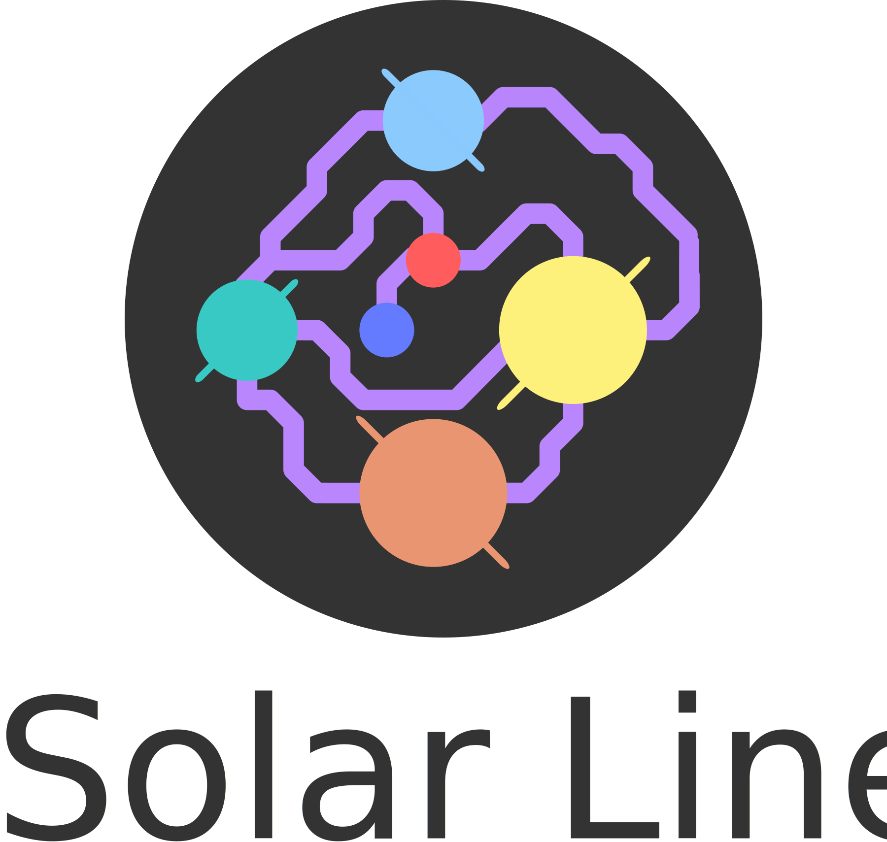Moodboard
A collection of space travel images I found online for inspiration.
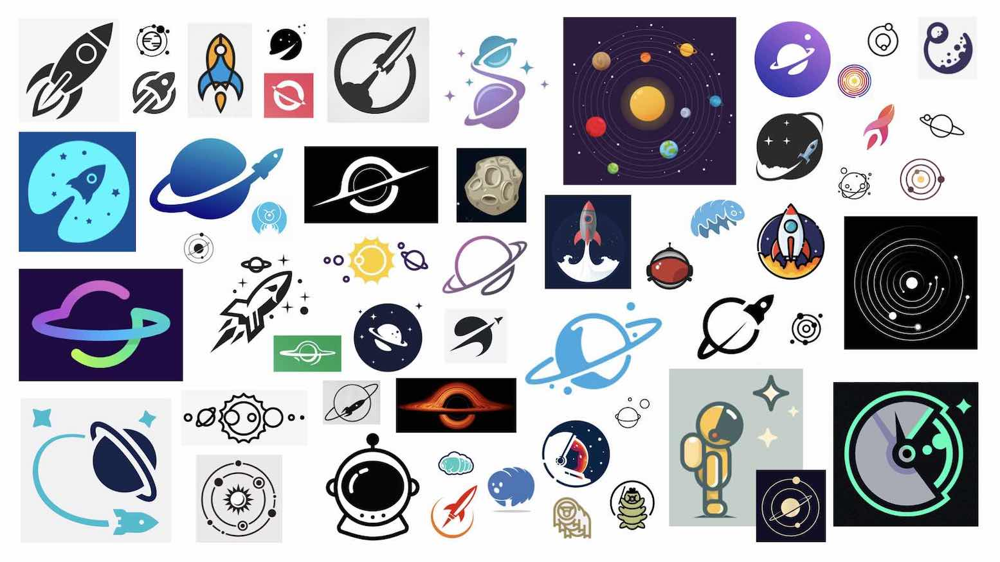Key words
These are words that come to mind when I think of space travel.
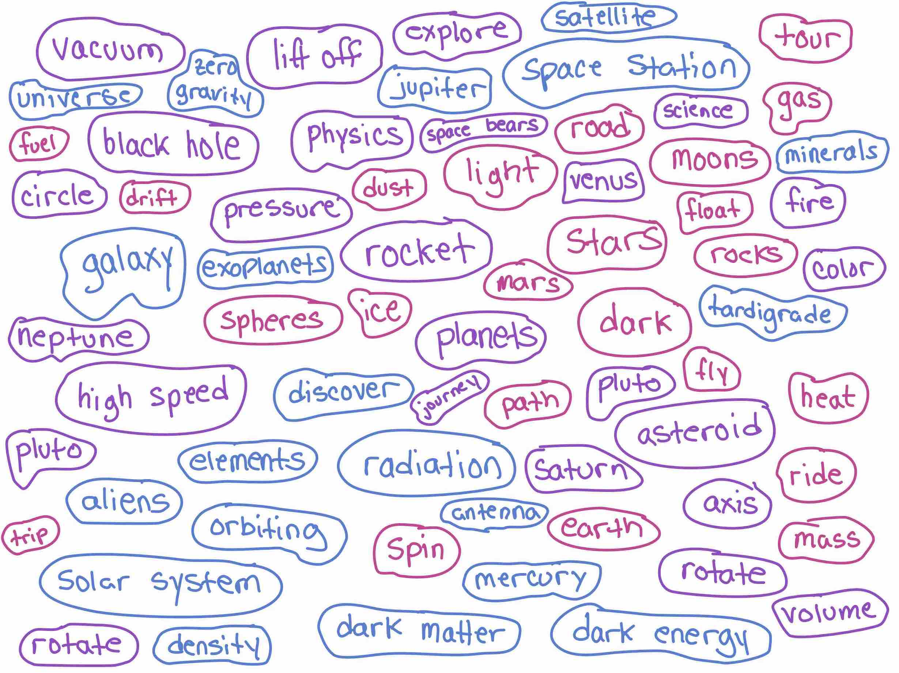First Sketch
I decided to combine the solar system with a metro map. I see future space travel as an opportunity to visit planets in our system and find the metro map to be a nice simplified style that could work well for a logo.
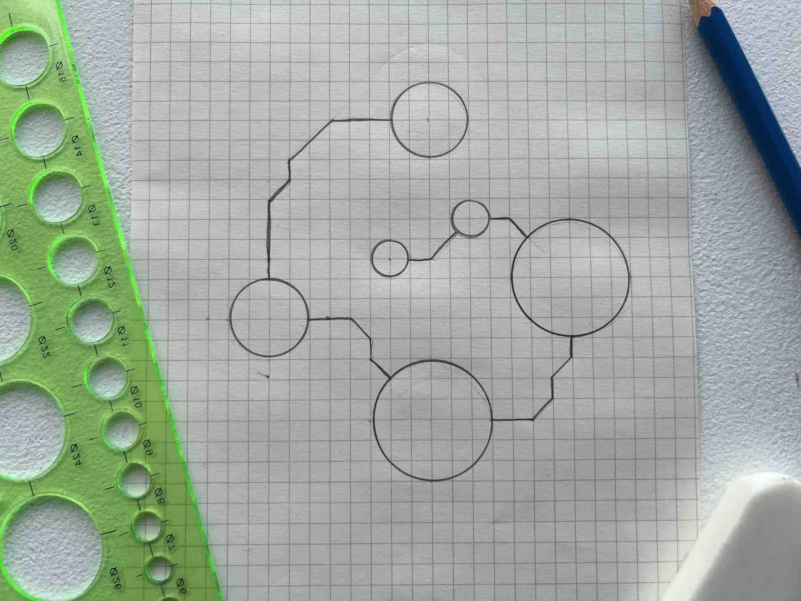Variations
I sketched three variations of the system. A circular system, an overlapping system and finally a system where all lines reach out. Of course none of these are scientifically accurate or to scale. The aim is to communicate the idea across through an image that is simple and recognizable.
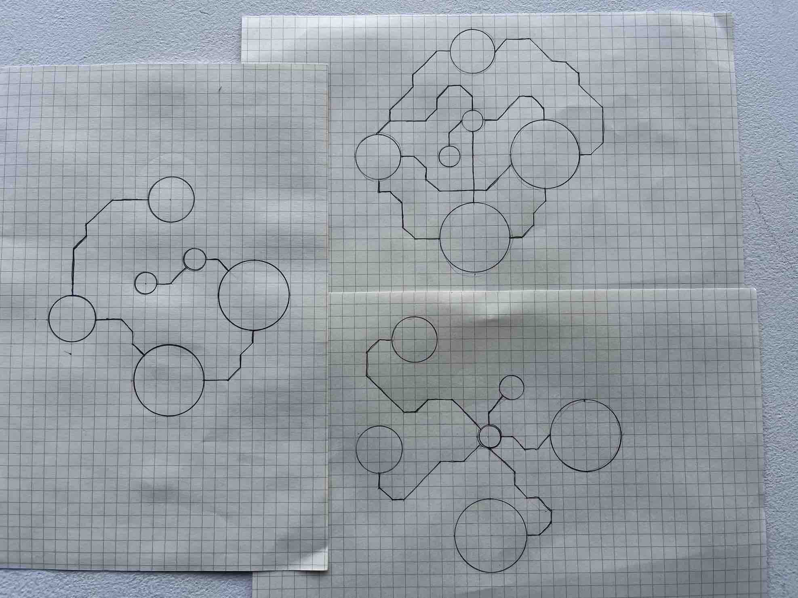Computer
The three variations were digitized on the computer
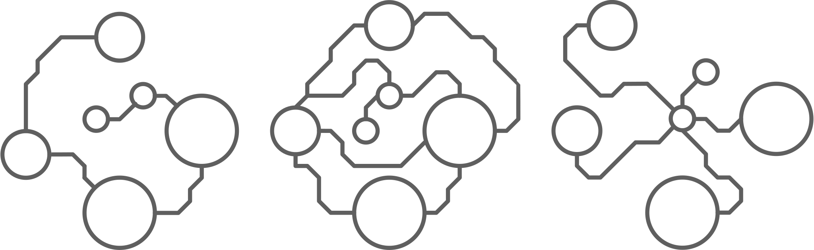Almost final
There are a lot of things that can be improved. The planet colors need to be carefully chosen (for now I started with basic colors) and the metro lines should be simplified slightly. For now, the next step is to decide which logo to use.
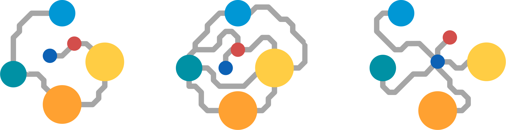Colors
The primary color for the line is purple which is often used to represent science and mystery (such as dark matter). The colors of each planet were selected so that they resemble the planet composition but are accessible against the purple and dark background.
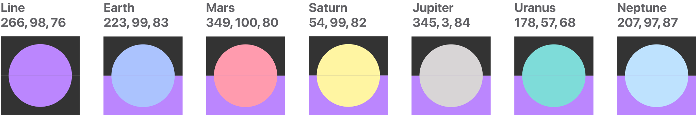However after applying the accessible colors to the logo, they appered washed out so the luminance was reduced.
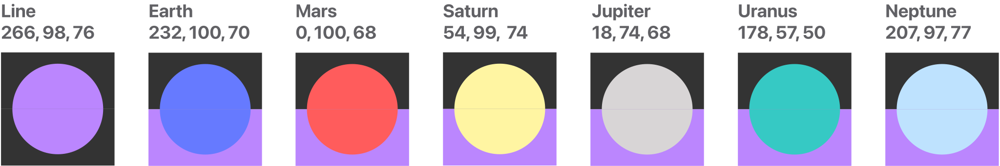The Circle Line
Takes a single path and is wrapped in a circle to save space.
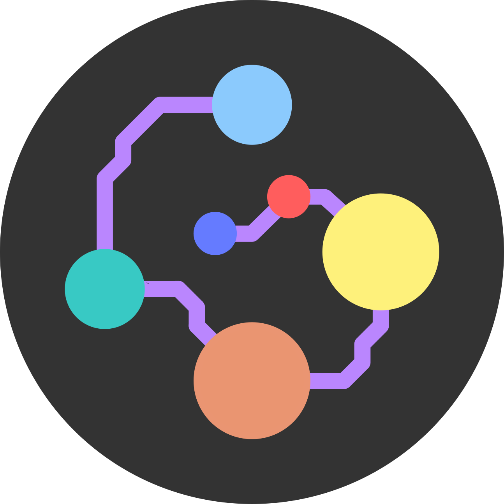The Standard Line
Takes on the shape of a complex metro line found in many cities.
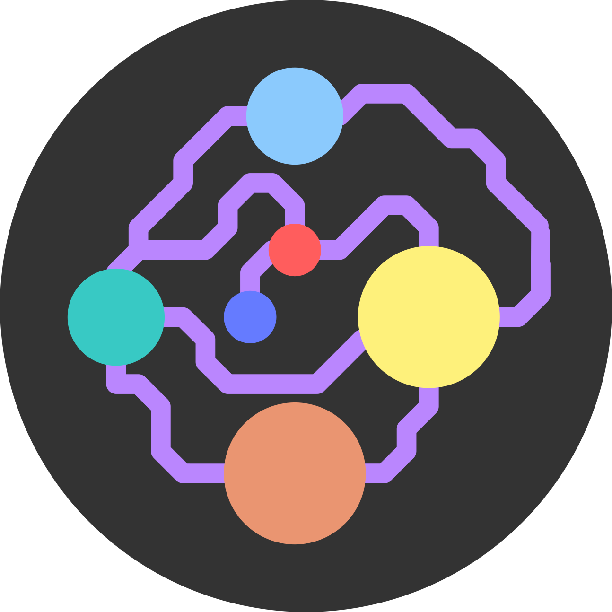The Star Line
Branches out from a single point (earth) to reach destinations non-stop.
Name
I started thinking of names that resemble space travel within our sun system. This brings me to make the first word 'Solar' and and search for a single syllable word for travel (keeping the full name to 3 syllables).
- Solar Path
- Solar Line
- Solar Route
- Solar Trail
- Solar Trek
- Solar Way
I decided to select 'Solar Line' as the final name. Solar Line plays off the logo design and represents Space Travel whereas a name such as 'Solar Trek' would represent Space 'Exploration'. I also wanted each circle to look like a planet, rather than be mistaken for only a metro stop so I added rings to the giant planets.
Configuration 1
Words on the same line and to the right of the logo.
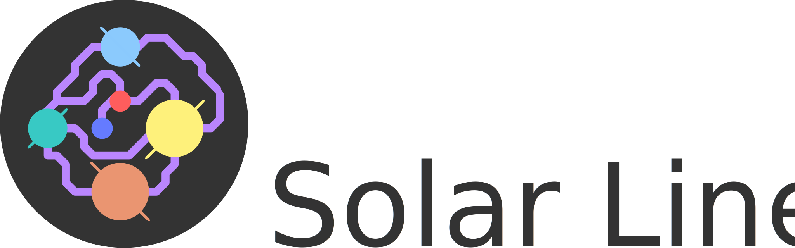Configuration 2
Logo next to name with words aligned to the left.
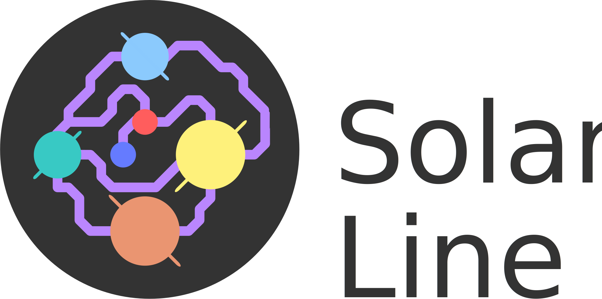Configuration 3
Logo above name and centered.
Kit
The kit is work in progress and will include
- Letterhead
- Business Card
- Vehicle
- Coffee Mug